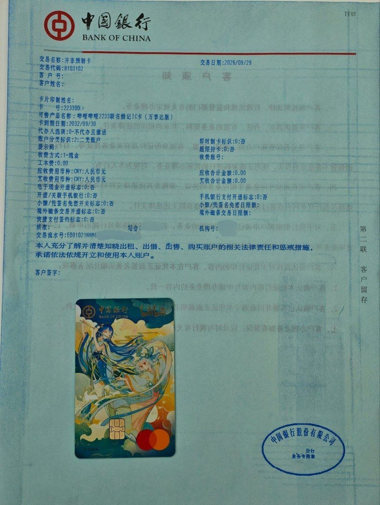

奶昔🥤
@realNyarime
到卡后，网点的参考操作流程：
1.使用“9071124-线上预约卡片网点入库”将卡片入库
2.使用“8103102-个人开非预制卡”进行领卡
（注意：此处与一般流程不同，如需领取网申卡需要改动几个标志位，具体请网点查阅相关资料为准，客户请注意在柜外显示屏核对卡号是否与自己申请的一致，防止变为新开卡）。
领卡后无需再进行“8003308/G04013-领非预制卡”操作，卡片已可正常使用。
如需维护卡片印制姓名信息，请提前说明，如在业务进入显示电子回单页后，则已无法取消。

冬之泪（windy-wind）
@dzlwi
@realNyarime 会不会明明是流程异常，却仍然显示制卡中，我指的是在官方网页上